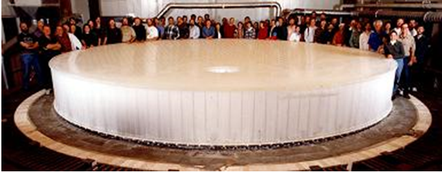
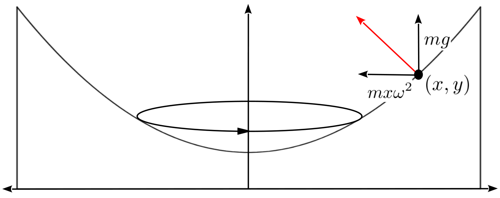
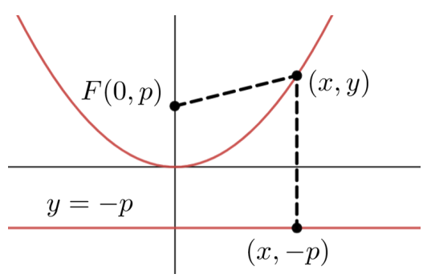

Though he didn’t invent the telescope, Galileo is usually cited as the first person to use a telescope to discover, for example, craters and mountains on the surface of the Moon, the phases of Venus, and the moons of Jupiter. This work helped convince Galileo of the validity of Nicolaus Copernicus’ 39 heliocentric (sun-centered) model of the solar system, for which he (Galileo) was eventually condemned by the Inquisition. The Englilshman Thomas Harriot 40 did it before Galileo but Harriot didn’t publish his observations.
All telescopes follow one of two basic designs, refractive and reflective. Refractive telescopes us the refractive property of light described by Snell’s Law (see [cross-reference to target(s) "SECTIONsnells-law-refr" missing or not unique]) to reduce the large image entering the telescope to a smaller area, thus focusing the image for the observer. Galileo used a refractive telescope
Refractive telescopes work well for relatively close objects, but since refraction separates light into its various color components (think of light passing through a prism) it tends to create little rainbows (usually called chromatic aberrations) in the image.
Because of his work in optics, Newton realized that he could use the reflective properties of the parabola to achieve greater magnification with a smaller physical device while simultaneously avoiding the chromatic aberrations. All modern research telescopes are built on Newton’s original design, which uses parabolic mirrors to reflect light toward the focus of the parabola, where a secondary mirror reflects it to the eyepiece.
For example, each mirror of the two large mirrors required by the Large Binocular Telescope at Mt. Graham, Arizona is \(8.4\) meters in diameter. The image below gives a sense of the size of one of these mirrors.

To produce a large, perfectly parabolic mirror the Richard F. Caris Mirror Laboratory 42 uses a process called spin casting, where high quality borosilicate glass is place into a revolving furnace. As the furnace spins the glass liquefies and the rotational forces push the surface of the glass into a parabolic shape.
As the molten glass spins the middle goes down and the sides go up. As we will see momentarily the surface generated must be a parabola. The shape of the mirror, and hence its focal length, will be affected by the rotational speed of the glass. The question is, how fast must we spin the furnace to produce a particular focal length?
To begin to answer that question we will need to think about a typical point mass at a point on the surface of the molten glass as shown below. Suppose the glass is spinning at an angular velocity of \(\omega\frac{\text{radians}}{\text{second}}\text{.}\) Our task is to find the function \(y=y(x)\) whose graph is the shape of a cross-section of the surface of the liquid glass.

The red arrow in the diagram depicts the force keeping the point mass elevated and spinning in a circle. It will be perpendicular to the surface of the liquid, as shown. (Think about a hose with a hole in it. The water sprays out in a stream perpendicular to the hose.)
If we separate that force into its vertical and horizontal components, as shown in the diagram, the magnitude of the vertical component of the force is \(mg\text{,}\) where \(g\) is the acceleration due to gravity. This is the force needed to counter the weight of the particle.
Drill1.10.4.0.6.
The only horizontal force is the centripetal force due to the spinning of the furnace, which is \(mx\omega^2\text{.}\) We will derive this formula analytically in [cross-reference to target(s) "CHAPTERcalc-trig" missing or not unique] when we have extended the scope of our differentiation rules. For now assume this is correct and proceed.
(a)
Use the diagram above to show that the curve \(y=y(x)\) must satisfy the differential equation
The slope of the line tangent to the parabola at \((x,y)\) will be \(\dfdx{y}{x}\text{.}\) This will be perpendicular to the force acting at that point, represented by the red arrow.
(b)
Show that \(y(x)\) must be a parabola to satisfy this differential equation.
(c)
Using the value \(g=9.8\frac{\text{meters}}{\text{second}^2}\text{,}\) graph the parabola from part (b). for \(\omega =1, 2, 3\text{.}\) Do these graphs coincide with your intuition about what should happen as the liquid rotates faster?
In antiquity the reflective properties of all of the conic sections (parabola, ellipse and hyperbola) were worked out via very laborious geometric arguments. In [cross-reference to target(s) "CHAPTERScienceBeforeCalc" missing or not unique] we saw that Roberval reestablished these properties using his more dynamic (if somewhat questionable) approach. The next two problems will reestablish the reflective property of the parabola once more using a combination of Geometry and Calculus.
Recall from [cross-reference to target(s) "CHAPTERScienceBeforeCalc" missing or not unique] that any light ray parallel to the axis of a parabola will reflect to a single point (the focus of the parabola).
Drill1.10.4.0.7.

A parabola may be defined geometrically as the set of points equidistant from a given point, the focus, and a given line, the directrix as shown below. Suppose that the point \((x,y)\) lies on the parabola with focus \(F=(0,p)\) and directrix \(y=-p\) as in the diagram at the right.
(a)
Show that \((x,y)\) must satisfy the equation: \(x^2=4py.\)
(b)
In Drill 1.10.4.0.6, show that in order to spin a mirror with a focus 43 at \((0,p)\) the angular velocity must be \(\omega =\sqrt{\frac{g}{2p}}\text{.}\)
Drill1.10.4.0.8.
Consider the parabola with equation \(y=\frac{x^2}{4p}\) focus \(F=(0,p)\text{,}\) and directrix \(y=-p\) as in Drill 1.10.4.0.7.
(a)
Show that the tangent line (in red) is perpendicular to line segment \(FQ\text{.}\)